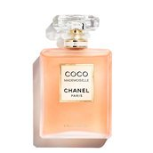
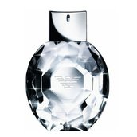

YOUR PERFUME, YORSELF
There’s interesting data linking your perfume choice to your personality. In his years of research, Alan R. Hirsch, MD, founder of the Smell and Taste Treatment and Research Foundation, has administered personality tests to 18,631 people and compared the results to the participants’ aroma and flavor preferences.
“It’s basically like a Rorschach test using odor preferences,” Dr. Hirsch says. There are a lot of great implications for the findings, according to Dr. Hirsch, because you can understand someone much better if you know what they like. When you’re on a date, for example, you can smell the person’s perfume or cologne and instantly know much more about their personality.
“Often on a first date, people put up a false front, acting their best and not wanting to show their weaknesses. But this way, you can get an instantly better understanding of who they truly are.”Based on Dr. Hirsch’s findings, these are the perfume-personality pairings you’re most likely to find.
Maybe you have experienced a certain feeling evoked by someone’s scent. Because scents are associated with precious memories and experiences – or the opposite.
That scent may be connected to a particular person and all of the beloved facets of their personality. So, the perfume you wear could potentially become something that you will be remembered for.
But a scent can also create a very special mood – in the room you are in or just inside yourself.
A mood you are attracted to, a mood you dream about being present when you wear the perfume, or that awaken a feeling inside you – a scent that turns on your inner muse and makes you feel sexy, serene or bold... Whatever you identify most with.
So which scent is yours? POWDERBLOOM, NECTARFLAME, URBAN OUD or all three? Your heart and your sense of smell will always guide you.
Perfumes Available
BLACK OPIUM

CALVIN KLEIN

CHANEL

DIAMONDS

HUGO BOSS

J'ADORE

OLYMPEA LEGEND